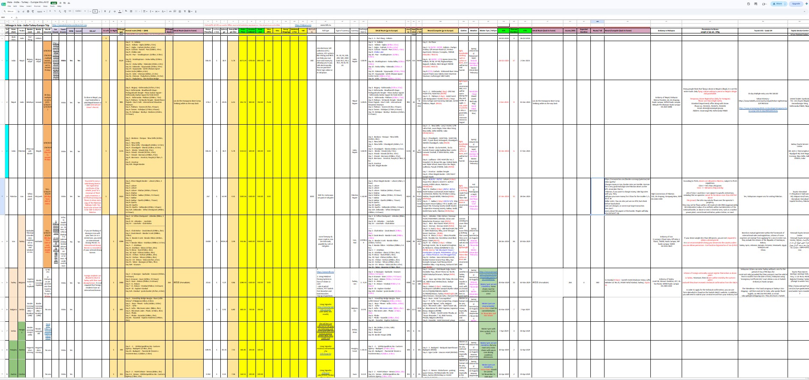
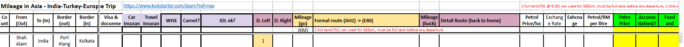
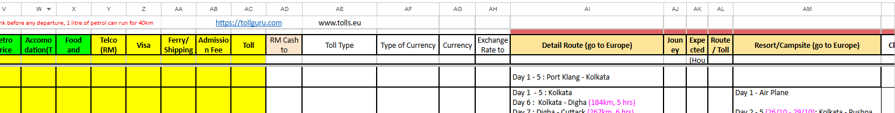

中文说明
这趟路，不是说走就走。
很多人看到 1.28.306.42049，会觉得这是一个人很勇敢地开车上路。 可是在出发之前，大量的准备已经藏在 Excel 里面。
我需要规划每一个国家的 in / out border、border situation、visa documents、 car insurance、travel insurance、WISE、Carnet、IDL、left / right drive、 formal route、petrol price、exchange rate、toll charges、currency、detail route、 campsite、clothes、weather，还有很多很多细节。
这些不是浪漫的部分。 可是没有这些，浪漫的部分很难发生。
Toyotaki 能够从 Malaysia 一路走到 Europe，再回到 Asia， 背后不是单靠胆量，而是靠一格一格的 planning。


English Memory Summary
The invisible spreadsheet behind the visible journey.
One year before departure, Tuzi planned the journey in a large Excel file. The spreadsheet included border entry and exit points, border conditions, visa documents, car insurance, travel insurance, WISE, Carnet, IDL, left/right driving, formal routes, fuel prices, exchange rates, tolls, currency, detailed routes, campsites, clothing, weather, and other logistics.
The journey may look spontaneous from the outside, but it was built on careful preparation. The visible road was supported by an invisible planning system.
Heart Statement
勇敢不是没有准备。
勇敢是知道有很多风险，所以提前把它们一格一格写下来。
The road looked free. But before freedom, there was planning.